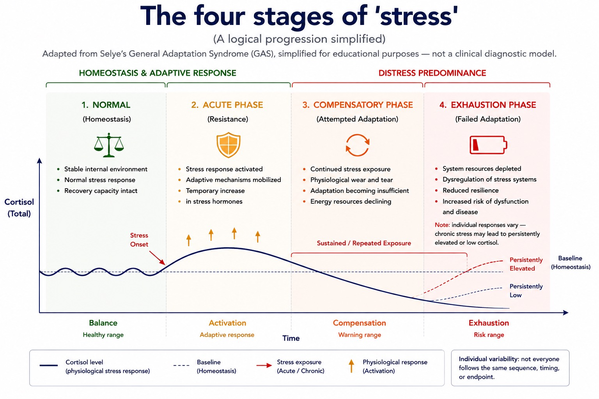
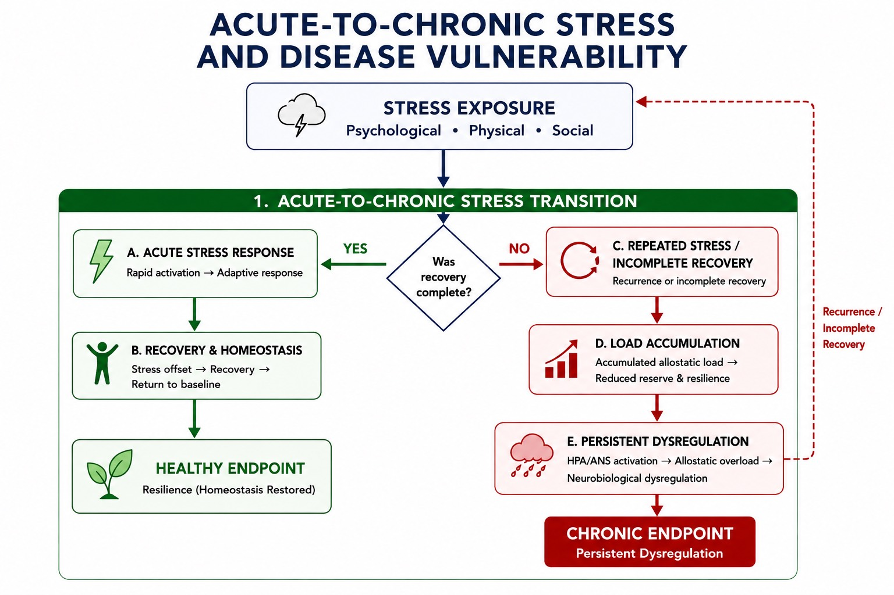
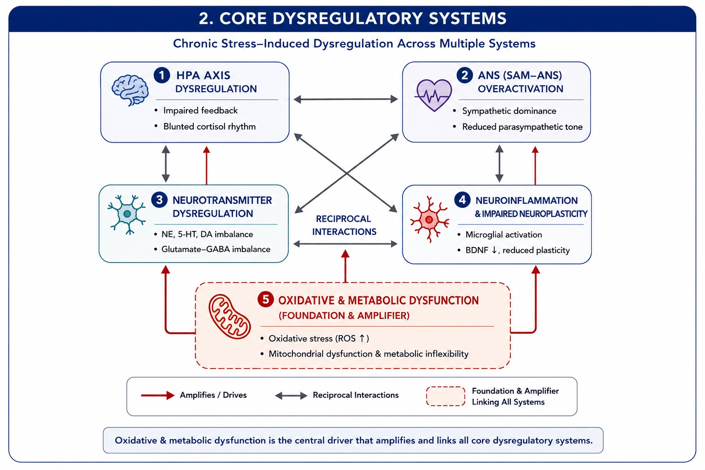
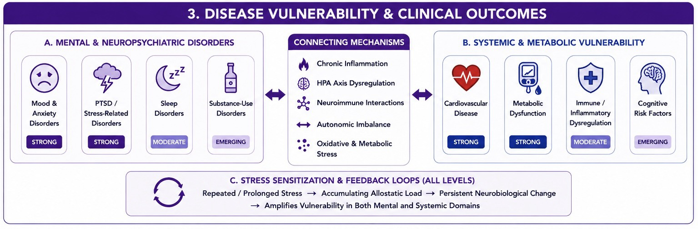
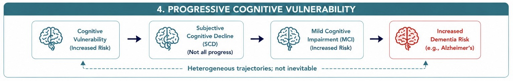
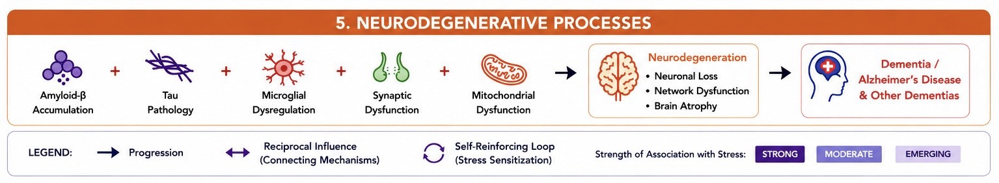

1. Normal
(Homeostasis)

- Stable internal environment
- Normal stress response
- Recovery capacity intact

(A logical progression simplified)
Adapted from Selye’s General Adaptation Syndrome (GAS), simplified for educational purposes — not a clinical diagnostic model.
(Homeostasis)
(Resistance)

(Attempted Adaptation)

(Failed Adaptation)

Note: individual responses vary —
chronic stress may lead to persistently
elevated or low cortisol.


Psychological • Physical • Social

Rapid activation → Adaptive response

Stress offset → Recovery →
Return to baseline

Resilience (Homeostasis Restored)

Recurrence or incomplete recovery

Accumulated allostatic load →
Reduced reserve & resilience

HPA/ANS activation → Allostatic overload →
Neurobiological dysregulation
Persistent Dysregulation
Recurrence /
Incomplete
Recovery

Chronic Stress–Induced Dysregulation Across Multiple Systems


Reciprocal
Interactions

Oxidative & metabolic dysfunction is the central driver that amplifies and links all core dysregulatory systems.



Repeated / Prolonged StressAccumulating Allostatic LoadPersistent Neurobiological Change
Amplifies Vulnerability in Both Mental and Systemic Domains
Repeated / Prolonged Stress → Accumulating Allostatic Load → Persistent Neurobiological Change
→ Amplifies Vulnerability in Both Mental and Systemic Domains



Heterogeneous trajectories; not inevitable
